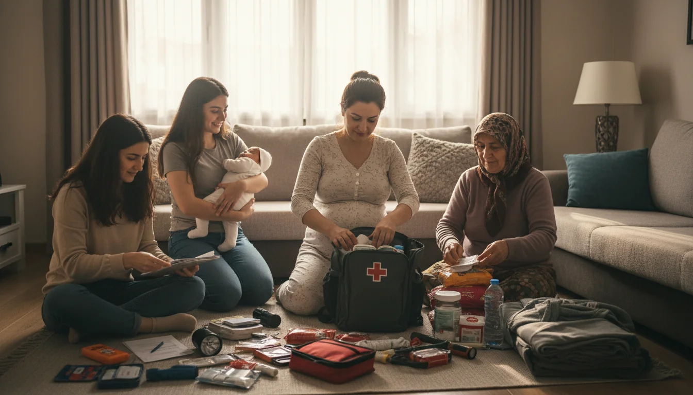

Kadınlar İçin Deprem Hazırlığı ve Güvenlik
Deprem hazırlığında cinsiyetsiz görünen öneriler, kadınların özel ihtiyaçlarını atlayabilir. Hamilelik, emzirme, kişisel bakım ve güvenlik için özel dikkat edilmesi gerekenler.
Hamile Kadınlar İçin
Gebelik boyunca deprem çantanızda: 10 günlük prenatal vitamin, doktor kayıtları fotokopisi, ultrason çıktıları, doğum hastanesi bilgisi. Sarsıntı sırasında: karnı koru, sırtüstü yatmayın (omurga üzerinde basınç), sol tarafa yan yatın. 3. trimesterda hızlı hareket zorsa yatakta kalın, yastıkla kaplanın.
Emzikli Anne ve Bebekle
Bebek için: hazır mama (powder, sıcak suya ihtiyaç), biberon + yedek kapak, kundak ve bebek bezi (3 günlük), bebek bakım malzemeleri (sabun, krem, pomat). Emziren anne için: emzirme yastığı (taşınır), su (günde 3+ litre - emzirme için), hazır protein atıştırmalık. Deprem sonrası stres süt miktarını azaltabilir — panik olmayın, formül sütü yedek olarak hazır tutun.
Bekar Kadın / Yalnız Yaşayan İçin
Komşu ağı çok önemli — apartmanda 2-3 kadınla özel WhatsApp grubu oluşturun, deprem sonrası birbirinizi kontrol edin. Panik butonu (4.000-10.000 TL) — yalnız düşme veya enkaz altında kalma durumunda yardım çağırır. Aileye uzak iseniz AFAD Özel İhtiyaç kaydı yapın.
Kişisel Bakım Malzemeleri
Hijyen paketi: kadın tamponu (30 günlük), temizlik mendili, kişisel sabun. Yedek iç çamaşır (5 adet). Kozmetik minimum — gereksiz eşya çantayı şişirir. Doğum kontrol hapı (kullanıyorsan) 2 aylık stok — düzenli doz kaçırmak ciddi sorun.
Güvenlik Konuları
Deprem sonrası kaotik ortamda kadın güvenliği riskleri artabilir. Çantanızda: düdük (tekrar önlem), biber spreyi (yasal olanını kontrol edin), alarm cihazı, küçük el feneri. Yalnız geceleri dışarıda kalmayın — güvenilir toplanma alanı veya refakatçi tercih edin. ÇocukAile temsilci merkezleri kadınlara öncelikli yardım sağlar.
Psikolojik Destek
Dünya sağlık örgütü verileri: afet sonrası PTSD kadınlarda erkeklerden 2 kat daha yaygın. Özellikle aynı zamanda bakım sorumluluğu (çocuk, yaşlı) taşıyan kadınlar risk altında. Psikolojik destek rehberimiz detaylı bilgi veriyor.